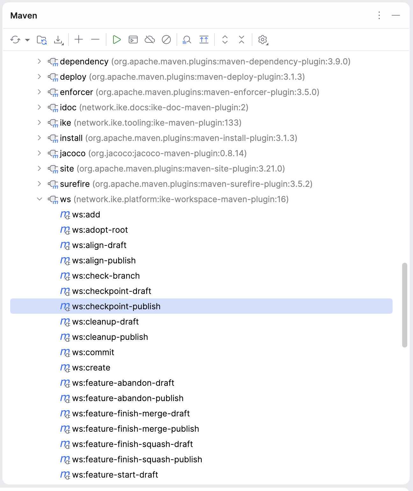
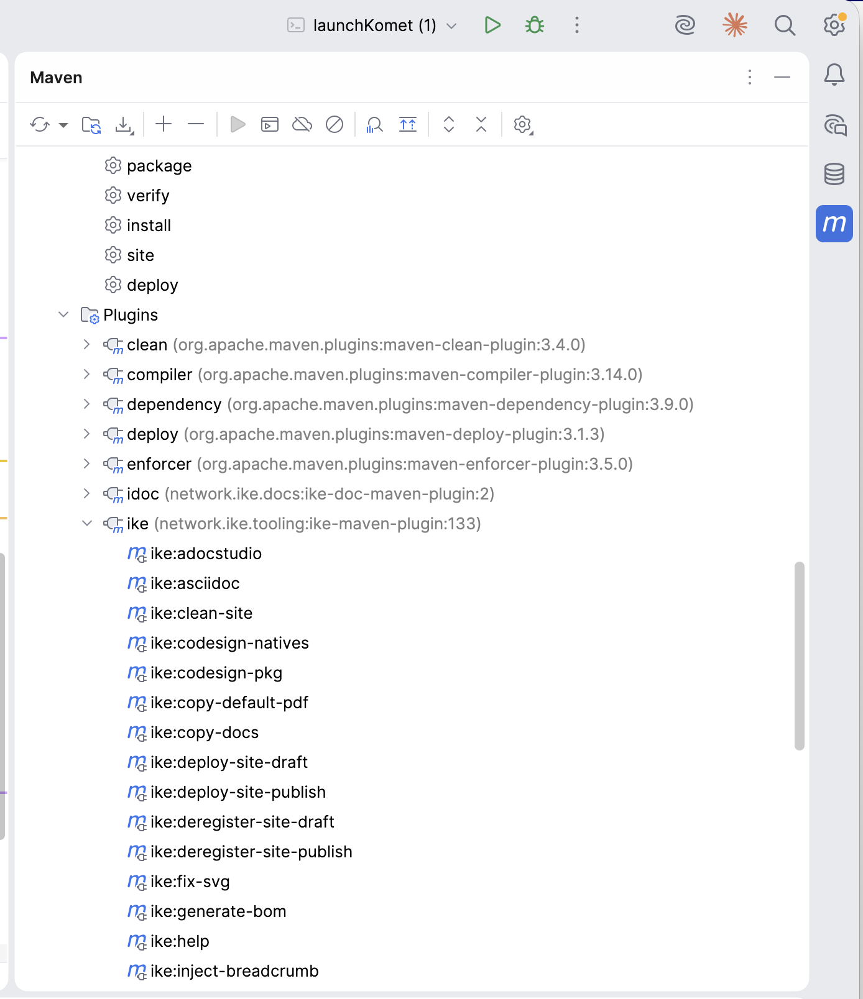

IKE Tooling
IKE Maven Plugin 200
- Overview About Release cascade Self-host bootstrap
- Parent Project IKE Tooling
- Reports Project Information 9 Project Reports 1
IKE Maven Plugin
The ike-maven-plugin provides the ike:* goal prefix — single-repo release orchestration, the release cascade, site deploy + publishing, scaffolding, native packaging utilities, and BOM generation. The AsciiDoc doc-rendering pipeline moved to ike-doc-maven-plugin (idoc:) in IKE-Network/ike-issues#437.
| Coordinate | Value |
|---|---|
| Group ID | network.ike.tooling |
| Artifact ID | ike-maven-plugin |
| Goal prefix | ike: |
| Packaging | maven-plugin |
| Java version | 25 |
For workspace-spanning goals (ws:* prefix), see the ws plugin[1] in ike-platform. The two plugins are deliberately separate — ike:* is single-repo, ws:* fans out across a workspace’s checked-out subprojects.
Plugin shape
This is a regular Maven plugin — no <extensions>true</extensions>, no custom <packaging> type registered via META-INF/plexus/components.xml, no participation in the build extension realm. Goals look up at execution time, the plugin’s <version> interpolates from 199 like any other managed plugin, and consumers inherit the version through ordinary <pluginManagement> indirection.
This was not always the case. Earlier revisions registered the <packaging>ike-doc</packaging> custom type here (the stale components.xml removed per IKE-Network/ike-issues#320), which forced this plugin to be loaded as a build extension and consequently forced its <version> to be a literal string everywhere it was declared. That constraint was retired alongside the migration to a classifier-canonical doc shape — see the ike-tooling reactor home for the full design rationale, or IKE-Network/ike-issues#321 for the umbrella tracking issue.
What this means for plugin consumers: nothing changes about how you invoke ike:* goals. What changed is that the plugin no longer forces literal-version pins in your POM, and no longer contributes <packaging>ike-doc</packaging> to your reactor. Doc modules use <packaging>pom</packaging> (or <packaging>jar</packaging> for hybrids) plus an adoc classifier attachment; the activation is path-conditional on src/docs/asciidoc/ existence in ike-parent’s `doc-pipeline profile.
Goal naming convention
Most state-mutating goals come in a draft / publish pair:
mvn ike:release-draft # report what would happen, write nothing
mvn ike:release-publish # apply the changesThe bare goal name (e.g. ike:release) is wired to the draft variant. This is the same convention used by ws:* — every mutation is two-phase with a real chance to audit the draft before committing.
Read-only goals (e.g. ike:help, ike:env) have no draft/publish split — they are always safe.
Quick start — IntelliJ IDEA
Open the project in IntelliJ. The Maven tool window (right sidebar, View → Tool Windows → Maven if hidden) auto-discovers the ike:* goals from this plugin’s <pluginManagement> declaration in ike-parent. Both ike and ws (the workspace plugin) appear as top-level entries:

Expand the ike (network.ike.tooling:ike-maven-plugin:…) entry to see all ike:* goals:

Common interactions:
- Run a read-only goal (
ike:help,ike:env) — double-click the goal in the tree. - Run a goal with parameters (e.g.
ike:site-publishwith-Dsite=removedto uninstall) — right-click the goal → Modify Run Configuration… → fillProperties→ Run. - Pin frequently-used invocations — once a Run Configuration is saved, it appears in the toolbar dropdown for one-click access.
- Discover goals —
ike:helpprints the registry, but the Maven tool window has all goals visible by name without running anything.
For workspace-spanning operations, the same IntelliJ pattern applies to the ws:* plugin in ike-platform — see the ws plugin Quick Start[1].
Quick start — Command line
# Diagnose any in-flight or partial release (read-only)
mvn ike:release-status
# Preview a release (writes a markdown report; no on-disk changes)
mvn ike:release-draft
# Execute a release: tag, deploy to Nexus + komet.sh + gh-pages,
# bump to next SNAPSHOT
mvn ike:release-publish
# Re-deploy the site for the current release without re-releasing
mvn ike:site-publish
# Apply scaffold convention upgrades
mvn ike:scaffold-publishQuick reference
| Goal | Phase | Purpose |
|---|---|---|
| release-{draft,publish} | release | Single-repo release: tag, deploy to Nexus + komet.sh + GitHub Pages, bump |
| verify-release-published | release | Verify all post-release publication targets (6 read-only HTTP checks) |
| site-{draft,publish} | site | Generate, deploy, and register the Maven site; -Dsite=removed uninstalls and deregisters |
| ike:generate-bom | bom | Auto-generate a BOM POM from another module’s dependency management |
| scaffold-{draft,publish,revert} | scaffold | Apply the workspace scaffold manifest (gitignore, hooks, IDE settings) |
| ike:inject-breadcrumb | site | Inject nav breadcrumbs into JaCoCo HTML reports |
| ike:setup | setup | Install VCS bridge git hooks to ~/.git-hooks/ |
| ike:unpack-zip | utility | Download + unpack a zip from a URL |
| ike:rename | utility | Rename a file (replaces exec-maven-plugin calls to mv) |
| ike:codesign-natives | native | Sign native libraries inside a jlink runtime image (macOS notarization) |
| ike:codesign-pkg | native | Re-sign .app inside .pkg to add JVM entitlements |
| ike:jpackage-props | native | Compute build timestamp, platform, JPackage version properties |
| ike:notarize | native | Sign + notarize macOS installer packages (.pkg, .dmg) |
| ike:help | inspection | Discover available ike:* goals |
Release goals
ike:release-{draft,publish}
Full single-repo release in one command. The publish variant:
- Creates a
release/<version>branch from current HEAD - Sets the release version (strips
-SNAPSHOT) - Stamps
project.build.outputTimestampfrom the commit timestamp (reproducible builds) - Runs
mvn verify -B - Tags
v<version> - Builds the site and deploys to scpexe internal site (
/srv/ike-site/<projectId>/<version>/) - Updates the
latestsymlink to point at the new version (ike-issues#303) - Force-pushes the staged site to
<repo>/gh-pagesso it serves athttps://ike.network/<projectId>/[2]via the org CNAME (ike-issues#312) clean deployto Nexus (signed via Bouncy Castle)- Pushes tag and main to origin
- Creates a GitHub Release (uses milestone-based notes if a matching
<projectId> v<version>milestone exists) - Cleans up the snapshot/main site
- Bumps to the next SNAPSHOT version
Failure recovery: re-run ike:release-publish and it picks up where the previous attempt left off (already-published phases are skipped).
If your reactor is the one that builds ike-maven-plugin (i.e., ike-tooling itself), see Self-host bootstrap pattern[3] for how the release flow’s site invocations sidestep the reactor cycle.
ike:verify-release-published
Verify that all six post-release publication targets are reachable for a given project + version. Read-only; exits non-zero on any check failure so it composes into shell pipelines and CI.
# Use pom defaults (artifactId + pom version with -SNAPSHOT stripped)
mvn ike:verify-release-published
# Explicit values (e.g., verifying from outside the released checkout)
mvn ike:verify-release-published -DprojectId=ike-tooling -Dversion=163
# Skip targets that aren't ready yet (e.g., immediately after tag push,
# before the org-site sync has had a chance to run)
mvn ike:verify-release-published -DskipOrgSite=trueChecks:
- Site (current):
https://ike.network/<repo>/[4] - Site (versioned):
https://ike.network/<repo>/<N>/[5] - Site (latest):
https://ike.network/<repo>/latest/[6] - Org-site landing:
https://ike.network/[7] - Nexus artifact:
https://nexus.tinkar.org/…/ike-tooling-N.pom[8] - GitHub release:
https://api.github.com/repos/IKE-Network/<repo>/releases/tags/vN[9]
ike-issues#374.
mvn ike:release-draft # preview
mvn ike:release-publish # execute
mvn ike:release-publish -DskipVerify=true # skip mvn verify (faster retry)ike:release-cascade and ike:cascade-export
ike:release-publish releases one repo. The IKE foundation — ike-tooling → ike-docs → ike-platform — must release in order, because each consumes the artifacts of the ones above it. ike:release-cascade walks that order, releasing every foundation repo with unreleased changes; ike:cascade-export writes the cascade topology for a CI meta-runner. Both assemble the graph from each repo’s own src/main/cascade/release-cascade.yaml.
See The IKE Release Cascade[10] for the model, the manifest format, and how to test and run it.
Site goals
ike:site-{draft,publish}
Generate, deploy, and register the project’s Maven site in one converged goal (ike-issues#398). The publish variant builds the site, deploys it (version-prefixed directory + latest symlink + gh-pages push, matching what release-publish does for the site portion), and registers the project on the IKE-Network/IKE-Network.github.io org landing page (https://ike.network/[7]). Registration is part of the default flow — no separate goal.
Useful for re-deploying a site without re-releasing the artifact.
mvn ike:site-publish # deploy + register
mvn ike:site-publish -DupdateRegistration=false # deploy only, skip org landing page
mvn ike:site-publish -DupdateSite=false # registration only, no site deploy
mvn ike:site-publish -Dsite=removed # uninstall: remove the deployed
# site directory and deregisterThe -Dsite=removed form replaces both the old clean-site (stale snapshot/checkpoint cleanup) and deregister-site goals — uninstall includes stale-dir cleanup and org-index removal. Use ike:site-draft to preview any of these without writing.
Scaffold goals
ike:scaffold-{draft,publish,revert}
Apply (or revert) the workspace scaffold — the conventional non-source files that every IKE workspace shares: .gitignore, git hooks under ~/.git-hooks/, .mvn/maven.config, IDE settings (.idea/, .vscode/). The scaffold manifest is shipped as the scaffold classifier of ike-build-standards.
scaffold-revert undoes a previous scaffold-publish per the tier policy in the manifest (some files are tool-owned and revertible, others are tracked in version control and not touched on revert).
Site and setup goals
The AsciiDoc doc-rendering pipeline (asciidoc, render-pdf, adocstudio, fix-svg, patch-docbook, prepare-renderer-output, copy-default-pdf, copy-docs, scan-logs) moved to ike-doc-maven-plugin (idoc:) — see the idoc plugin[11]. The two goals below stay in ike-maven-plugin: neither renders AsciiDoc.
Native packaging
These are macOS-specific signing / notarization goals used by Komet desktop builds.
ike:codesign-natives
Sign native libraries (.dylib, .jnilib) inside a jlink runtime image so the resulting installer passes Apple notarization.
ike:codesign-pkg
Re-sign the .app bundle inside a jpackage-produced .pkg installer to add macOS entitlements required by the JVM.
Utility goals
ike:unpack-zip
Download and unpack a zip archive from a URL. Uses java.util.zip.ZipInputStream directly — bypasses unpack-dependencies when the source isn’t a Maven artifact.
See also
- The IKE Release Cascade[10] — how the three-repo foundation releases in order, and the goals that drive it.
- Self-host bootstrap pattern[3] — for reactors that build the plugin they want to bind.
ws:*plugin[1] — workspace-spanning goals.- ike-tooling reactor home[12].
- Source on GitHub[13].
- Issue tracker[14].